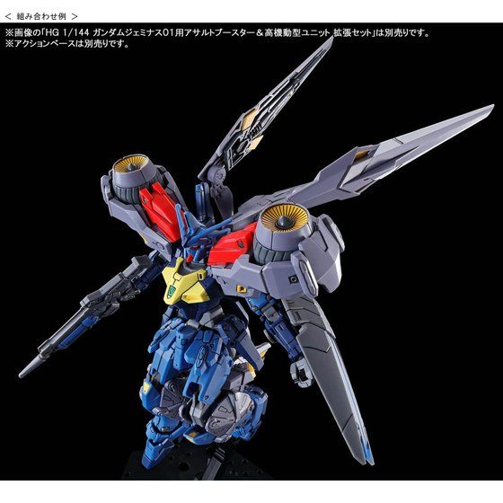
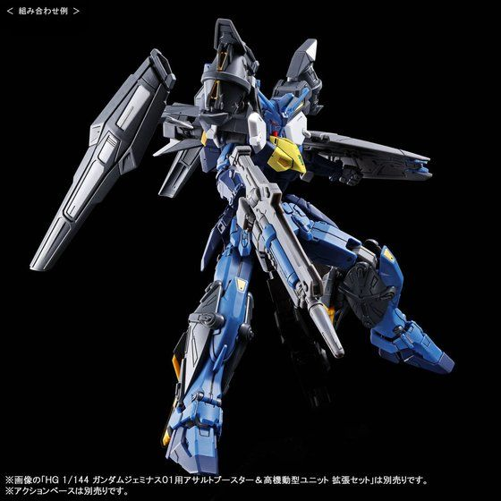
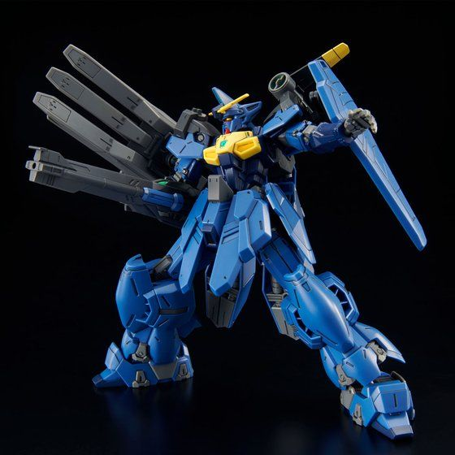

OZX-GU02A Gundam Geminass 02 là Mobile Suit xuất hiện trong New Mobile Report Gundam Wing Dual Story: G-Unit , ngoại truyện của Mobile Suit Gundam Wing. Được lái bởi Odel Bernett thuộc tổ chức MO-V'st. Sự phát triển của Geminass Unit 2 hầu hết diễn ra song song với Unit 1. Nó giống với anh em của nó ngoại trừ cách phối màu: vì Geminass 02 được thiết kế để sử dụng trong không gian nên nó sử dụng bảng màu xanh đậm để giảm khả năng bị phát hiện trong không gian.Được triển khai để chiến đấu thực tế sớm hơn Geminass 01 và do được điều khiển bởi Odel Bernett giàu kinh nghiệm hơn nên nó cũng có thể kích hoạt Hệ thống PX sớm hơn người anh em của nó.
Một cặp Beam Sword được gắn ở backpack
Một chiếc khiên cầm tay được chế tạo bằng Hợp kim Gundanium có cấu trúc tổ ong. Nó được trang bị một máy phát điện trường, giúp nó có hiệu quả chống lại cả vũ khí đạn pháo và đạn chùm.
Một vũ khí cầm tay nguyên mẫu có thể bắn beam nhờ máy gia tốc hạt bên trong. Nó cũng được trang bị một thiết bị ngưng tụ điện từ cho phép nó bắn ra "Hyper Shot" đã tích điện.
Hệ thống PX tận dụng lượng Adrenaline tăng lên khi phi công đang chiến đấu và cũng tăng hiệu suất của Mobile Suit nhưng có giới hạn thời gian mà nếu vượt quá sẽ gây ra hậu quả nghiêm trọng cho cả phi công và MS.
Geminass 02 được giao cho Odel Bernett, anh trai của Odin. Mặc dù Odel là phi công giỏi và có thể sử dụng hệ thống PX nhưng Geminass 02 của anh ấy đã bị hư hại trong trận chiến và bị OZ Prize bắt giữ. Geminass 02 bị hư hỏng và đã được OZ Prize tu sửa lại và đặt tên là OZ-10VMSX GTA Aesculapius .Trong Gundam EX A, Pigna Hershey sử dụng Gundam Geminass 02 được trang bị Ground Heavy Equipment Unit (Trang bị hạng nặng mặt đất) để giao chiến với XXXG-01D Gundam Deathscythe của Duo Maxwell.
